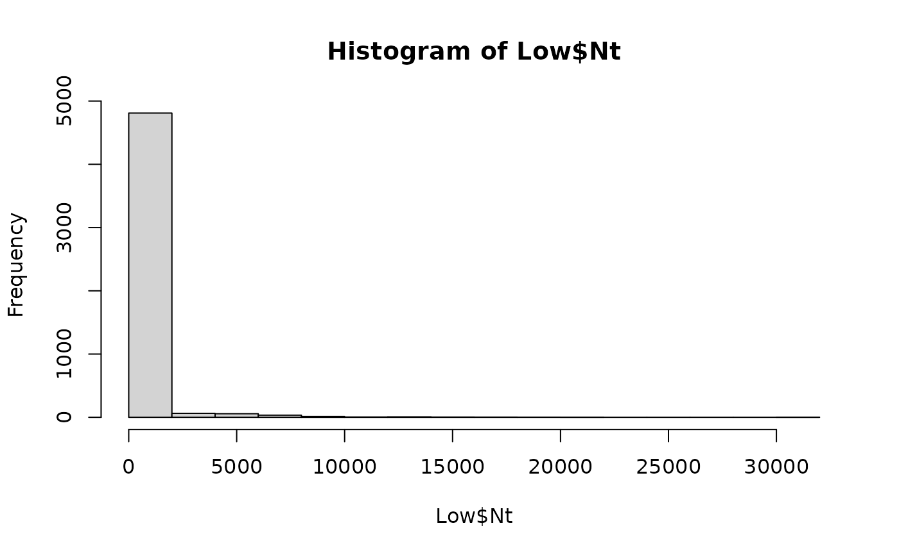
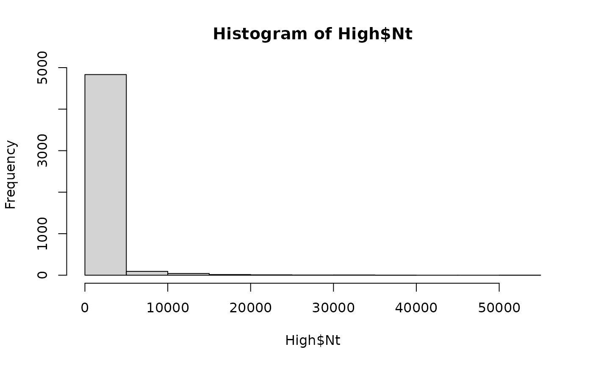

The function caGrowthBaranyi() estimates the numbers of L. monocytogenes in cantaloupe flesh (i.e., dices, slices)
kept at a constant temperature Temp at the end of the logistics stage, time. The growth rate at a given temperature
is calculated from a square-root type model defined by the minimum temperature for growth (Tmin) and the exponential growth rate
at 5 \(^{\circ}C\) (EGR5). The primary growth model with lag phase of Baranyi and Roberts (1994)
is used to
estimate the numbers of L. monocytogenes at time. The value of the physiological state of cells,
q0, must be provided. The return of the natural logarithm of Q
at time enables the reuse of this function for multiple transport and storage stages.
Usage
caGrowthBaranyi(
data = list(),
Temp,
MPD,
unitSize = NULL,
EGR5,
Tmin,
Q0,
time
)Arguments
- data
A list of four elements see
caPrimaryProduction()function.- Temp
(\(^{\circ}C\)) Temperature of cantaloupe flesh at the logistic stage.
- MPD
(\(log_{10}\ CFU/g\)) Maximum population density of L. monocytogenes in cantaloupe flesh.
- unitSize
(
g) Weight of a pack of cantaloupe dices.- EGR5
(\(h^{-1}\)) Growth rate of L. monocytogenes in cantaloupe flesh at 5 \(^{\circ}C\).
- Tmin
(\(^{\circ}C\)) Nominal minimum temperature for growth of L. monocytogenesin cantaloupe flesh.
- Q0
Initial parameter
Qof the Baranyi and Roberts' model related to lag phase.- time
(
h) Time of the logistic stage.
Value
A list of two elements:
NtNumbers (
CFU) of L. monocytogenes in cantaloupe flesh at the end of the stage (scalar, vector or matrix);lnQtnatural logarithm of the lag-phase parameter
Qat the end of the stage (scalar, vector or matrix).
Note
The parameters Tmin and EGR5 were obtained by fitting a square-root model to growth data
of L. monocytogenes in cantaloupe flesh at temperature below 30 \(^\circ C\), extracted
from Danyluk et al. (2014)
, Fang et al. (2013)
,
Farber et al. (1998)
, Guzel et al. (2017)
, Hong et al. (2014)
,
Moreira (2019)
, Patil (2017)
and Ukuku et al. (2012)
.
\(Tmin = -2.0196\ ^\circ C\) (\(standard\ error = 0.576\ ^\circ C\)) and \(EGR5 = 0.035573\ h^{-1}\)
(\(standard\ error = 0.004\ h^{-1}\)). A zero is returned in the output elements when \(N=0\).
References
Team RC (2022). R: A Language and Environment for Statistical Computing. R Foundation for Statistical Computing, Vienna, Austria. https://www.R-project.org/. Danyluk MD, Friedrich LM, Schaffner DW (2014). “Modeling the growth of Listeria monocytogenes on cut cantaloupe, honeydew and watermelon.” Food Microbiology, 38, 52-55. doi:10.1016/j.fm.2013.08.001 . Fang T, Liu Y, Huang L (2013). “Growth kinetics of Listeria monocytogenes and spoilage microorganisms in fresh-cut cantaloupe.” Food microbiology, 34(1), 174-181. doi:10.1016\%2fj.fm.2012.12.005 . Farber JM, Wang SL, Zhang C (1998). “Changes in populations of Listeria monocytogenes inoculated on packaged fresh-cut vegetables.” Journal of Food Protection, 61(2), 192-195. Guzel M, Moreira RG, Omac B, Castell-Perez ME (2017). “Quantifying the effectiveness of washing treatments on the microbial quality of fresh-cut romaine lettuce and cantaloupe.” LWT, 86, 270-276. doi:10.1016/j.lwt.2017.08.008 . Hong Y, Yoon WB, Huang L, Yuk H (2014). “Predictive Modeling for Growth of Non- and Cold-adapted Listeria monocytogenes on Fresh-cut Cantaloupe at Different Storage Temperatures.” Journal of Food Science, 79(6), M1168-M1174. doi:10.1111/1750-3841.12468 . Moreira JC (2019). “Effect of storage temperature on the survival or growth of Listeria monocytogenes on whole and fresh-cut produce. MSc Thesis. Louisiana State University and Agricultural and Mechanical College. USA.” Patil RD (2017). “Transfer of Listeria monocytogenes during cutting, slicing, dicing and subsequent storage of cantaloupe and honeydew melon. MSc Thesis. Michigan State University, USA.” Ukuku DO, Fett W (2002). “Behavior of Listeria monocytogenes inoculated on cantaloupe surfaces and efficacy of washing treatments to reduce transfer from rind to fresh-cut pieces.” Journal of Food Protection, 65(6), 924-930. doi:10.4315/0362-028X-65.6.924 .
Author
Ursula Gonzales-Barron ubarron@ipb.pt
Examples
# Cells with a low Q0
dat <- Lot2LotGen(
nLots = 50,
sizeLot = 100,
unitSize = 500,
betaAlpha = 0.5112,
betaBeta = 9.959,
C0MeanLog = 1.023,
C0SdLog = 0.3267,
propVarInter = 0.7
)
Low <- caGrowthBaranyi(dat,
Temp = 12,
MPD = 8,
unitSize = 250,
EGR5 = 0.035573,
Tmin = -2.0196,
Q0 = 0.01,
time = 5
)
hist(Low$Nt)

# Cells with a high Q0
High <- caGrowthBaranyi(dat,
Temp = 12,
MPD = 8,
unitSize = 250,
EGR5 = 0.035573,
Tmin = -2.0196,
Q0 = 3,
time = 5
)
hist(High$Nt)
